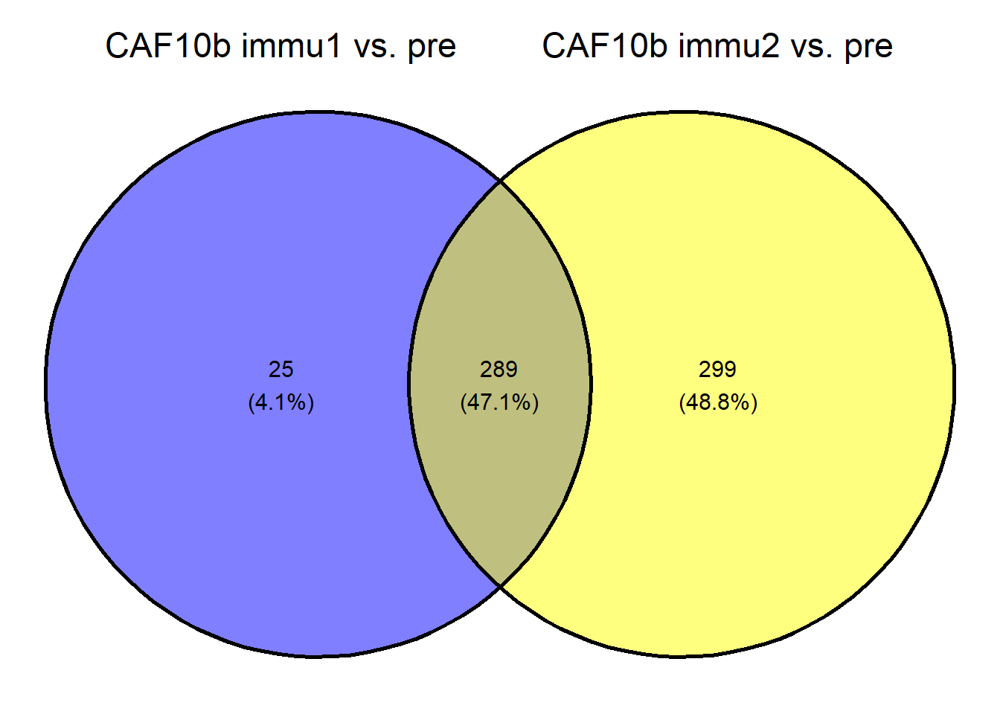
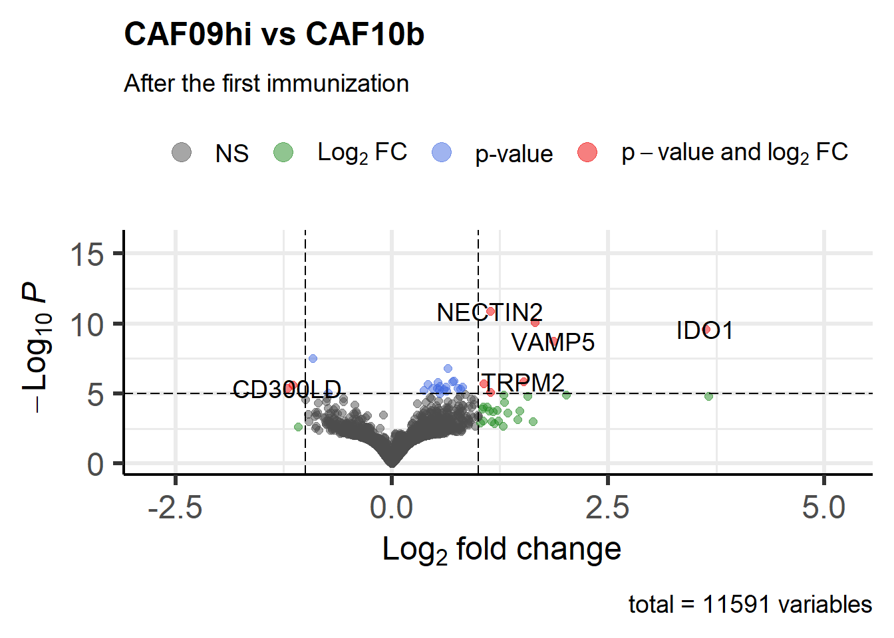

library(DESeq2)
library(EnhancedVolcano)
library(ggvenn)
library(stringr)
library(ggpubr)Differential gene expression analysis
Load package and data
se <- readRDS("../data/se_pcoding_scale_abundant_filtS.rds")Compare after- (timepoint 1, 2) and pre- immune within each vacc
I used lapply below, thus the code is a bit abstract to read. In short, for each vaccine, I performed two DGE (differential gene expression) analysis to compare (1) Immu1 vs. baseline (Day 1 after the first immunization vs. baseline), and (2) Immu2 vs. baseline (Day 1 after the second immunization vs. baseline)
vacc_l <- se$vacc %>% unique()
DGE_immu_vs_pre <-
lapply(vacc_l,
function(vacc){
se <-
se[rowData(se)$.abundant == TRUE,se$vacc == vacc]
rownames(se) <- rowData(se)$gene_name
count <- se %>% assay(1) %>%
as.matrix() %>%
round()
dds <-
DESeqDataSetFromMatrix(
count,
colData = colData(se),
design = ~ animal + timepoint
)
dds <- DESeq(dds, parallel = F)
immu1_vs_pre <-
lfcShrink(dds,
coef = "timepoint_immu1_vs_pre",
type = "apeglm",
parallel = F)
immu2_vs_pre <-
lfcShrink(dds,
coef = "timepoint_immu2_vs_pre",
type = "apeglm",
parallel = F)
DGE_immu_vs_pre <-
list("immu1_vs_pre" = immu1_vs_pre,
"immu2_vs_pre" = immu2_vs_pre)
return(DGE_immu_vs_pre)
})
names(DGE_immu_vs_pre) <- vacc_l
readr::write_rds(DGE_immu_vs_pre, "../data/DElist/DGE_immu_vs_pre.rds")gene_data_Type <- readRDS("../data/gene_data_Type.rds")
if (!dir.exists("../data/DElist/")) {dir.create("../data/DElist")}
if (!dir.exists("../data/figure")) {dir.create("../data/figure")}
mapply(function(vacc, contrast){
res <- DGE_immu_vs_pre[[vacc]][[contrast]] %>%
as_tibble(rownames = "gene_name") %>%
filter(!gene_name %>% str_detect("ENSMFAG"))
volcano <-
EnhancedVolcano(
res,
lab = res$gene_name,
x = "log2FoldChange",
y = "pvalue",
title = vacc,
subtitle = contrast
)
res_filt <-
res %>% filter(abs(log2FoldChange) > 1,
padj < .05) %>%
arrange(-log2FoldChange) %>%
left_join(gene_data_Type %>%
dplyr::select(gene_name, description))
res_filt %>% readr::write_csv(
paste0("../data/DElist/",
paste0("DE_", vacc, "_",contrast, ".csv"))
)
ggsave(paste0("../data/figure/",
paste0("vocalno_", vacc, "_",contrast, ".jpg")),
volcano, width = 8, height = 8, dpi = 600)
},
rep(vacc_l, 2),
c(rep("immu1_vs_pre", 2), rep("immu2_vs_pre", 2))
) H107_CAF09c
"../data/figure/vocalno_H107_CAF09c_immu1_vs_pre.jpg"
H107_CAF04_CpG
"../data/figure/vocalno_H107_CAF04_CpG_immu1_vs_pre.jpg"
H107_CAF09c
"../data/figure/vocalno_H107_CAF09c_immu2_vs_pre.jpg"
H107_CAF04_CpG
"../data/figure/vocalno_H107_CAF04_CpG_immu2_vs_pre.jpg" CAF09hi: immu 1 vs. baseline & immu 2 vs. baseline
fun_extract_de_up <-
function(vacc, contrast){
res <- DGE_immu_vs_pre[[vacc]][[contrast]] %>%
as_tibble(rownames = "gene_name") %>%
filter(!gene_name %>% str_detect("ENSMFAG"))
res_filt <-
res %>% filter(log2FoldChange > 1,
padj < .05) %>%
arrange(-log2FoldChange) %>%
left_join(gene_data_Type %>%
dplyr::select(gene_name, description),
by = "gene_name")
g_name <- res_filt %>% pull(gene_name)
return(g_name)
}
CAF09_immu1 <- fun_extract_de_up("H107_CAF09c", "immu1_vs_pre")
CAF09_immu2 <- fun_extract_de_up("H107_CAF09c", "immu2_vs_pre")
list(`CAF09hi immu1 vs. pre` = CAF09_immu1,
`CAF09hi immu2 vs. pre` = CAF09_immu2) %>%
ggvenn()CAF10b: immu 1 vs. baseline & immu 2 vs. baseline
CAF04_immu1 <- fun_extract_de_up("H107_CAF04_CpG", "immu1_vs_pre")
CAF04_immu2 <- fun_extract_de_up("H107_CAF04_CpG", "immu2_vs_pre")
list(`CAF10b immu1 vs. pre` = CAF04_immu1,
`CAF10b immu2 vs. pre` = CAF04_immu2) %>%
ggvenn()
CAF09 vs CAF04CpG
immu1_caf09_caf04CpG <-
list(CAF09hi = CAF09_immu1,
CAF10b = CAF04_immu1) %>%
ggvenn() +
ggtitle("Up-regulated genes - after first immunization")
immu1_caf09_caf04CpG
Compare between two vaccines
I also performed a comparison between two vaccines. The results showed that not many genes were differentially expressed when make a head-to-head comparison between two vaccines. Thus, it is more appropriate to take the previous approach to compare each timepoint to the baseline.
se_vacc_effect_first <-
se[rowData(se)$.abundant == TRUE, se$timepoint == "immu1"]
rownames(se_vacc_effect_first) <- rowData(se_vacc_effect_first)$gene_name
count <- se_vacc_effect_first %>% assay(1) %>% as.matrix() %>% round()
dds <-
DESeqDataSetFromMatrix(
count,
colData = colData(se_vacc_effect_first),
design = ~ vacc)
dds <- DESeq(dds, parallel = F)
res_vacc <-
lfcShrink(dds,
coef = "vacc_H107_CAF09c_vs_H107_CAF04_CpG",
type = "apeglm",
parallel = F)
EnhancedVolcano(
res_vacc,
rownames(res_vacc),
x = "log2FoldChange",
y = "pvalue",
title = "CAF09hi vs CAF10b",
subtitle = "After the first immunization"
)